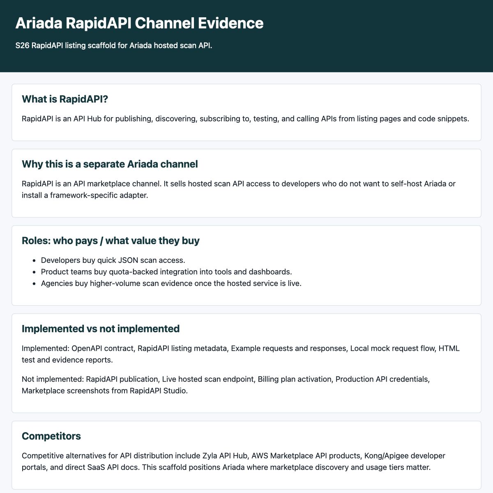

What is RapidAPI?
RapidAPI is an API Hub for publishing, discovering, subscribing to, testing, and calling APIs from listing pages and code snippets.
Why this is a separate Ariada channel
RapidAPI is an API marketplace channel. It sells hosted scan API access to developers who do not want to self-host Ariada or install a framework-specific adapter.
Roles: who pays / what value they buy
- Developers buy quick JSON scan access.
- Product teams buy quota-backed integration into tools and dashboards.
- Agencies buy higher-volume scan evidence once the hosted service is live.
Implemented vs not implemented
Implemented: OpenAPI contract, RapidAPI listing metadata, Example requests and responses, Local mock request flow, HTML test and evidence reports.
Not implemented: RapidAPI publication, Live hosted scan endpoint, Billing plan activation, Production API credentials, Marketplace screenshots from RapidAPI Studio.
Competitors
Competitive alternatives for API distribution include Zyla API Hub, AWS Marketplace API products, Kong/Apigee developer portals, and direct SaaS API docs. This scaffold positions Ariada where marketplace discovery and usage tiers matter.
Domains
Draft domains: ariada-scan.p.rapidapi.com for the RapidAPI proxy, api.ariada.ai for the hosted API placeholder, and ariada.org for product documentation.
Technical connectors
- RapidAPI proxy headers: X-RapidAPI-Key and X-RapidAPI-Host
- Ariada hosted scan API endpoint: POST /v1/scans
- OpenAPI 3.1 import for endpoint documentation
- JSON request and response examples for URL and HTML scan modes
Evidence
OpenAPI validation, listing metadata validation, examples, and local mock requests passed in this run against an ephemeral 127.0.0.1 mock server.
{
"scanId": "ariada_mock_url_001",
"status": "completed",
"target": {
"kind": "url",
"label": "https://example.com"
},
"summary": {
"findings": 1,
"critical": 0,
"serious": 1,
"moderate": 0,
"minor": 0
},
"findings": [
{
"id": "button-name",
"impact": "serious",
"wcag": [
"WCAG 4.1.2"
],
"message": "Button must have discernible text.",
"selector": "button:nth-of-type(1)"
}
],
"evidence": {
"reportUrl": "https://api.ariada.ai/reports/ariada_mock_url_001",
"engine": "ariada-hosted-scan"
}
}
Screenshot
Open nonblank screenshot evidence
{kind=link}

Blockers
Publication requires a live Ariada hosted scan API and founder-owned RapidAPI provider account access.
Distribution
Local scaffold is ready for founder review. Marketplace publication is intentionally not performed from this worktree.
Monetization
Draft tiers: Basic (100/month), Pro (5000/month), Compliance (50000/month). Pricing requires founder confirmation before publication.
Sources
- RapidAPI documentation home, accessed 2026-07-01, high reliability, primary source: https://docs.rapidapi.com/
- RapidAPI adding APIs guide, accessed 2026-07-01, high reliability, primary source: https://docs.rapidapi.com/docs/add-api-getting-started
- RapidAPI Hub Listing overview, accessed 2026-07-01, high reliability, primary source: https://docs.rapidapi.com/do/docs/hub-listing-overview
- OpenAPI Initiative, accessed 2026-07-01, high reliability, primary source: https://www.openapis.org/